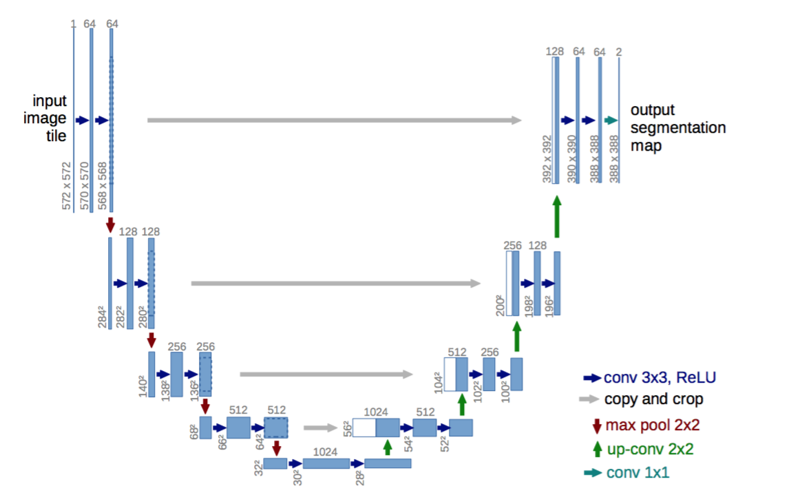
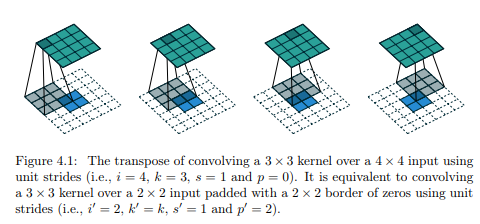
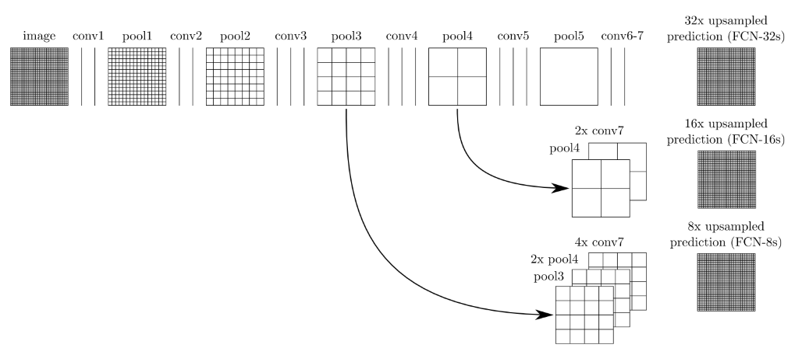
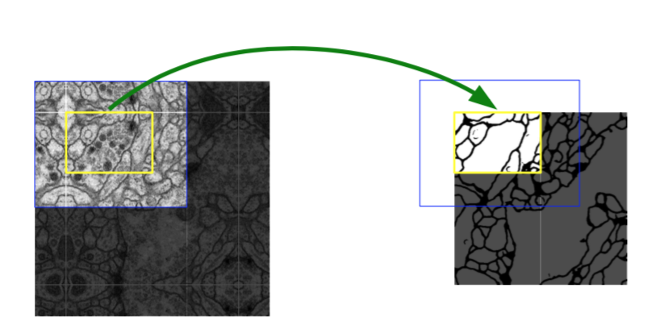
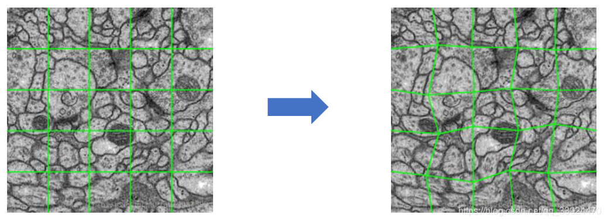
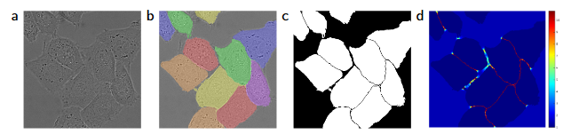

U-Net精读
原文：https://arxiv.org/pdf/1505.04597v1
参考：
U-Net - Convolutional Networks 论文翻译——中英文对照-腾讯云开发者社区-腾讯云 (tencent.com)
U-Net精读
创新点
- 提出了一种网络及训练策略，它依赖于大量使用数据增强，以便更有效地使用获得的标注样本。
- 这个架构包括捕获上下文的收缩路径和能够精确定位的对称扩展路径。
- 这种网络可以从非常少的图像进行端到端训练
1.引言
在生物医学图像处理中，期望的输出应该包括位置，即类别标签应该分配给每个像素。此外，生物医学任务中通常无法获得数千张训练图像。因此，Ciresan等人在滑动窗口设置中训练网络，通过提供像素周围局部区域（patch）作为输入来预测每个像素的类别标签。首先，这个网络可以定位。其次，局部块方面的训练数据远大于训练图像的数量。由此产生的网络大幅度地赢得了ISBI 2012EM分割挑战赛。
这样的]的策略有两个缺点。
- 首先，它非常慢，因为必须为每个图像块单独运行网络，并且由于图像块重叠而存在大量冗余。
- 其次，定位准确性与上下文的使用之间存在着权衡。较大的图像块需要更多的最大池化层，从而降低了定位精度，而较小的图像块则允许网络只能看到很少的上下文。

本文我们对"全卷积神经网络"架构进行了修改和扩展，使得它只需很少的训练图像就可以取得更精确的分割; 参见图1。
全卷积神经网络(FCN)
FCN将传统CNN后面的全连接层换成了卷积层，这样网络的输出将是热力图而非类别；同时，为解决卷积和池化导致图像尺寸的变小，使用上采样方式对图像尺寸进行恢复。
核心思想:
- 不含全连接层的全卷积网络，可适应任意尺寸输入；
- 反卷积层增大图像尺寸，输出精细结果；
- 结合不同深度层结果的跳级结构，确保鲁棒性和精确性。
FCN网络结构主要分为两个部分：全卷积部分和反卷积部分。其中全卷积部分为一些经典的CNN网络（如VGG，ResNet等），用于提取特征；反卷积部分则是通过上采样得到原尺寸的语义分割图像。FCN的输入可以为任意尺寸的彩色图像，输出与输入尺寸相同，通道数为n（目标类别数）+1（背景）。FCN网络结构如下：
上采样 Upsampling
在卷积过程的卷积操作和池化操作会使得特征图的尺寸变小，为得到原图像大小的稠密像素预测，需要对得到的特征图进行上采样操作。可通过双线性插值（Bilinear）实现上采样，且双线性插值易于通过固定卷积核的转置卷积（transposed convolution）实现，转置卷积即为反卷积（deconvolution）。在论文中，作者并没有固定卷积核，而是让卷积核变成可学习的参数。转置卷积操作过程如下：
跳级结构
如果仅对最后一层的特征图进行上采样得到原图大小的分割，最终的分割效果往往并不理想。因为最后一层的特征图太小，这意味着过多细节的丢失。因此，通过跳级结构将最后一层的预测（富有全局信息）和更浅层（富有局部信息）的预测结合起来，在遵守全局预测的同时进行局部预测。
将底层（stride 32）的预测（FCN-32s）进行2倍的上采样得到原尺寸的图像，并与从pool4层（stride 16）进行的预测融合起来（相加），这一部分的网络被称为FCN-16s。随后将这一部分的预测再进行一次2倍的上采样并与从pool3层得到的预测融合起来，这一部分的网络被称为FCN-8s。图示如下：



图2. 重叠图像块策略可以无缝分割任意大小的图像（EM堆叠中的神经元结构分割）。分割的预测在黄色区域，要求蓝色区域的图像数据作为输入。缺失的输入数据通过镜像外推。
我们架构中的一个重要修改是在上采样部分中我们还有大量的特征通道，这些通道允许网络将上下文信息传播到具有更高分辨率的层。因此，扩展路径或多或少地与收缩路径对称，并产生U形结构。网络没有任何全连接层，并且仅使用每个卷积的有效部分，即分割映射仅包含在输入图像中可获得完整上下文的像素。该策略允许通过重叠图像区策略无缝分割任意大小的图像（参见图2）。为了预测图像边界区域中的像素，通过镜像输入图像来外推缺失的上下文。这种图像块策略对于将网络应用于大的图像非常重要，否则分辨率将受到GPU内存的限制。
可以看到图像在输入前，四个边都进行了镜像扩大操作，以保证在通过一系列的valid卷积操作之后的结果能够与原图大小相一致。由于有些计算机的内存较小，无法直接对整张图片进行处理（医学图像通常都很大），会采取把大图进行分块输入的训练方式（如图2中的黄色框），最后将结果一块块拼起来。为了避免在拼接过程中边缘部分出现不连接等问题，在训练前，每一小块都会选择镜像扩大而不是直接补0扩大（如图9中的蓝色框），以保留更多边缘附近的信息。
对于我们的任务，可用的训练数据非常少，我们通过对可用的训练图像应用弹性变形来使用更多的数据增强。这允许网络学习这种变形的不变性，而不需要在标注图像语料库中看到这些变形。 这在生物医学分割中尤其重要，因为变形曾经是组织中最常见的变化，并且可以有效地模拟真实的变形。
2.网络架构
网络架构如图1所示。它由一个收缩路径（左侧）和一个扩展路径（右侧）组成。
收缩路径遵循卷积网络的典型架构。它包括重复使用两个3x3卷积（无填充卷积），每个卷积后跟一个线性修正单元（ReLU）和一个2x2最大池化操作，步长为2的下采样。在每个下采样步骤中，我们将特征通道的数量加倍。扩展路径中的每一步都包括特征映射的上采样，然后进行2x2卷积（“向上卷积”），将特征通道数量减半，与来自收缩路径的相应裁剪特征映射串联，然后是两个3x3卷积，每个卷积后面接ReLU。由于每一次卷积都会丢失边界像素，因此裁剪是必要的。在最后一层，使用1x1卷积将每个64分量特征向量映射到所需数量的类别上。网络总共有23个卷积层。
3.数据增强
当只有少量训练样本可用时，对于网络学习所需的不变性和鲁棒性而言，数据增强至关重要。对于显微镜图像，我们主要需要平移和旋转不变性，以及对形变和灰度值变化的鲁棒性。尤其是训练样本的随机弹性形变似乎是训练具有很少标注图像的分割网络的关键概念。我们使用在3x3粗糙网格上的随机位移矢量来生成平滑形变。从具有10个像素标准偏差的高斯分布中采样位移。然后使用双三次插值计算每个像素的位移。收缩路径末端的丢弃层执行进一步隐式数据增强。

4.训练
使用输入图像及其相应的分割映射来训练带有随机梯度下降的网络。由于无填充卷积，输出图像比输入少恒定的边界宽度。为了最小化开销并最大限度地利用GPU内存，我们倾向于在大批量数据大小的情况下使用大的输入图像块，从而将批量数据大小减少到单张图像。因此，我们使用高动量值（0.99），大量的训练样本来决定当前优化步骤中的更新。
能量函数由最终的特征映射上逐像素soft-max与交叉熵损失函数结合计算而成。soft-max定义为
其中表示特征通道k中在像素位置上的激活，。K是类别数量，是近似的最大化函数，即对于有最大激活的k，，对于其它的k有。交叉熵在每个位置上使用
来惩罚与1的偏差。其中，是每个像素的真实标签，是训练中我们引入的用来赋予某些像素更多权重的权重图。
我们为每一个真实分割预先计算了权重图，以补偿训练集里某个类别的像素的不同频率，并且迫使网络学习我们在相邻细胞间的引入小的分割边界（参见图3c和d）。

图 3. 用 DIC（微分干涉对比）显微镜记录的玻璃上的 HeLa 细胞 (a) 原始图像。 (b) 与groud truth分割重叠。不同的颜色表示 HeLa 细胞的不同实例 © 生成的分割mask（白色：前景，黑色：背景） (d) 使用逐像素损失权重进行映射，以强制网络学习边界像素。
分割边界使用形态学操作来计算。然后将权重图计算为
其中，是用来平衡类频率的权重图，表示到最近细胞边界的距离，表示到次近细胞边界的距离。在我们的实验中，设置,个像素。
在具有许多卷积层和通过网络的不同路径的深度网络中，权重的良好初始化非常重要。否则，网络的某些部分可能会进行过多的激活，而其他部分永远不会起作用。理想情况下，初始化权重应该是自适应的，以使网络中的每个特征映射都具有近似的单位方差。对于具有我们架构（交替卷积和ReLU层）的网络，可以通过从标准偏差为的高斯分布中绘制初始化权重来实现，其中N表示一个神经元传入结点的数量。例如，对于前一层中3x3卷积和64个特征通道，N=9⋅64=576。